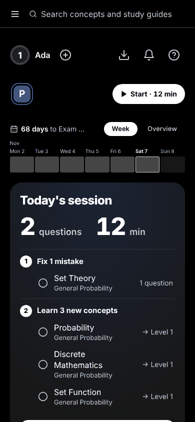
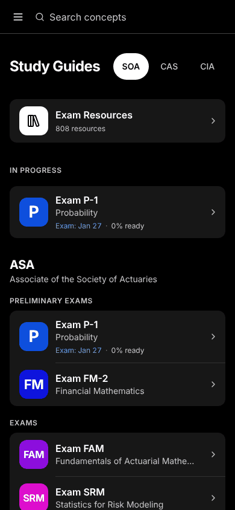
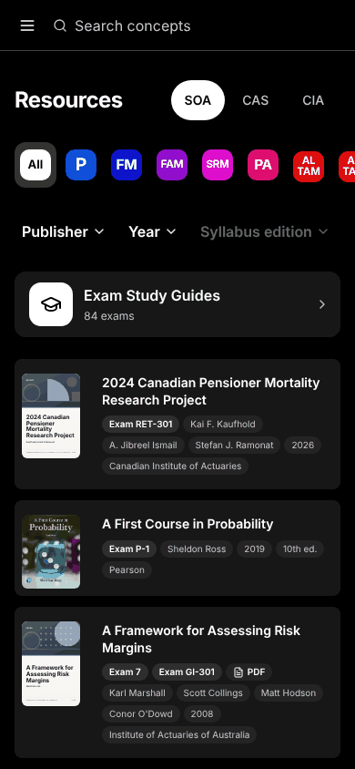
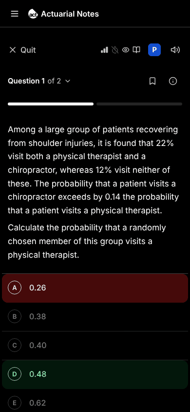
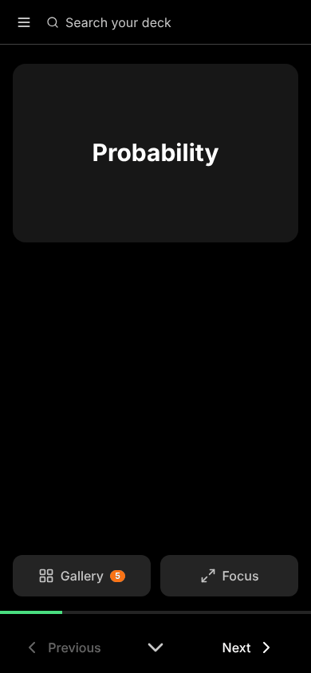
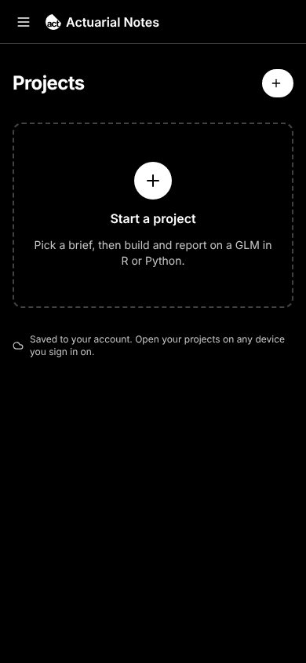
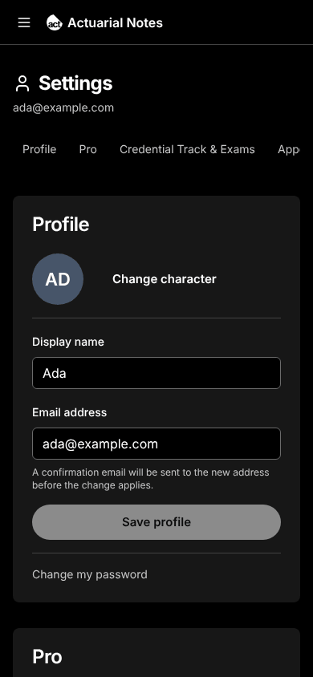

Actuarial Notes · Design review · 16 November 2026
The core of the app is seven sections in four places: Today; Learn, with Exams and Resources; Practice, with Quiz and Flashcards; Apply, with Projects; and Settings behind the account. This page looks at each as it runs on main, says what is wrong, and draws the corrected screen.
The redesign branch (claude/design-review-docs-phase-1-e57itt) already has part of this: the four places, the bottom bar, the exam switcher, a visitor's Today, folded development exams and the one-row quiz header. The build plan says what is on the branch and what is left.
The app was built from main and walked at 390 × 844 and 1280 × 800 as three readers: a visitor, a signed-in reader without Pro, and a Pro reader studying Exam P with one missed question on record. Every figure below was read off those rendered pages. The frames marked Live are screenshots from that walk; the frames marked Exhibit are drawings, and their names, counts, scores and dates are examples.
Not seen: an account with months of history, a real phone, a screen reader, and the level-up and streak overlays that follow a signed-in quiz. The quiz and results figures are a visitor's.
The Exhibit draft was sound on the look and on what happens between screens. Its problems were of scope and of states it did not draw. Ten corrections, all applied below.
| # | The draft | Corrected | Why |
|---|---|---|---|
| C1 Scope | 98 frames across every route, half of them for surfaces now hidden from the sidebar. | Seven sections, each with its live screen, its faults and its states. | Tools, Data Sources and the Store left the sidebar on main. The core has to be right first. |
| C2 Apply | Four places, with Apply listing Tools, Data Sources, Projects and Workflows. | The four places stay. Apply lists Projects alone while the others are hidden, and takes them back when they return. | A place can hold one page. The frame should not change each time a flag does. |
| C3 A place's pages | Listed in the sidebar; on a phone, shown by pressing the bar's tab a second time. | An underlined choice at the top of the place: Exams · Resources in Learn, Quiz · Flashcards in Practice. | A second press is a hidden control. Flashcards could not be found from the quiz builder. |
| C4 One statement | A draft, then a revision over it, with "Revised" marks to reconcile. | Revision 1's twelve changes are folded in. Nothing here is superseded by another part of the page. | A build cannot follow two documents that disagree. |
| C5 A visitor's Today | "Today is for a reader with a plan": a visitor is sent to the quiz builder. | Today is open to a visitor, from the browser's record. | Decided on 15 November (D-DR2), and built on the branch. |
| C6 Settings | An account drawer, a Settings page and a level sheet. The level, quests and league behind the account. | Settings stays one page, in grouped lists. The level, quests, league and reminders stay on Today, as one line. | Decided on 16 November. The live page is 3,681 px, and that is what needs fixing. |
| C7 Flashcards | One card frame. | Two views, Deck and Study, with the turned card, Got it and the empty deck drawn. | The live page is neither a list nor a study view, and the draft kept that. |
| C8 Resources | Rows of text, no covers. | A small cover on every row. | Every resource page has a cover, real or drawn, and a cover is how a reader finds a book. |
| C9 The Exams list | "The exam in focus first, then the track", so one exam is listed twice. | One ladder. The reader's exams carry their facts in place. | The live page has the same fault: Exam P is on its first screen twice. |
| C10 Projects | No state for a reader without Pro. | The same page, with the briefs readable and starting locked. | Most readers will meet the locked page first. |
Four places in the order a candidate works: Today, Learn, Practice, Apply. On a desktop they are the sidebar, each with its pages under it. On a phone they are a bar at the foot of the screen, and a place's pages are a choice at the top of the place.
The sidebar
A phone
Coaching Actuaries sells products named Learn and Practice, and the Store already lists them under those names. The two words are plain verbs for what a candidate does, so sharing them is not a problem, and candidates who know that frame will find their way here faster. What keeps the two apart is Today and Apply, which they do not have, and never borrowing their own marks (Adapt, Earned Level). A Store listing always carries its seller's name, so "Practice for Exam P" there cannot be taken for this app's Practice.
The page a reader opens every day. Its job is one question, "what do I do now?", and one button that does it.
On main
Exhibit

15 points · about 36 min
1Fix 2 mistakes
2Learn 3 new concepts
Three header controls, one line for the level, streak and goal, the week, the card, the slot. The list scrolls behind the slot. Time comes from points on an exam paced by the point.
3 points · about 7 min
1Fix 2 mistakes
The session is what this reader has: the mistakes. With none, the slot reads Build a quiz. The week is the plan's, so it is not shown; the plan is locked, as text.
From the 3 questions answered in this browser
1Fix 1 mistake
No wall. The same card, from the browser's record. A first visit with no record asks one question, "Which exam are you studying?", and its slot starts a five-question quiz.
11 of 12 right · tomorrow, 14 questions
✓Fix 2 mistakes
✓Learn 3 new concepts
✓Review 1 concept
A finished list and tomorrow's size. No slot, because there is nothing to press. Part-way, the slot reads Continue · 8 left and answered rows are ticked.
The ladder of exams, then one exam's syllabus in the examining body's words. Its job is to answer "what is on this exam, and how far along am I?"
On main
Exhibit

ACAS
Guides
The page's title leads, since the list is the exam picker. Each exam once. Facts as text. A credential fits one screen.
Exam 5
Basic Ratemaking and Reserving · Apr 28, 2027 · 34% ready
Learning objectives
Objectives come first, above the folds about format. No underlines. The bar is the exam's colour and has its count beside it.
23–30% of the exam · 12 of 31
B1. Calculate an overall rate level indication using the pure premium method and the loss ratio method.
B2. Adjust premium to current rate level using the parallelogram method and extension of exposures.
Readings
The statement is upright and in the syllabus's words. Only concepts are underlined, and each opens in the concept viewer, which stays as built.
The shelf of every reading, 808 of them. Its job is finding one, so this is one of the two pages that keeps a search bar.
On main
Exhibit

14 readings · added 2 in Spring 2027
Only the filters look like filters. The chosen one has an ink outline. Four readings on the first screen where main shows two.
Basic Ratemaking
Werner & Modlin
✓ Fact checked
Contents
As built, on the shared surfaces. Get a copy is a row, so the slot holds one button.
Where Practice opens. Build a quiz, answer it, see the result. This is where a reader spends most of their minutes, and it has the most seams.
On main
Exhibit

about 24 min
On the shared surface. Flashcards is one tap away, with its count. Each setting says what it is and what it is set to.
A book has 2,000 earned car-years and incurred losses of $900,000.
Calculate the pure premium.
One row of chrome and the bar. All five options and Confirm are on the first screen. Flag, info, sound and the settings icons are in More.
A book has 2,000 earned car-years and incurred losses of $900,000.
Calculate the pure premium.
The same screen, changed in place. The reader's answer and the right one are named in one card. The button has not moved.
22 of about 24 min
Earned
To fix
The donut as drawn today, with nothing over it. The percentage is in the text colour. One screen where main takes four.
The second page of Practice, one tap from the quiz builder: the cards a reader has collected, one for every concept that reached Level 1. It has two jobs, and the live page does neither fully: looking through the deck, and studying it.
On main
Exhibit

The collection is the page. Filters narrow the tiles and the Study count with them. Adding cards is in the header's More.
The card takes the screen. The bar leaves, as it does in a quiz. No slot until there is something to decide.
Two events are independent when one happening does not change the probability of the other.
The back is the concept page's own definition and formula. Got it ticks the card and moves on; Next in the header moves on without ticking.
Your deck is empty
A card is collected the first time you answer a question on its concept correctly.
Says how a card is earned and shows the first three waiting. No search bar, filters or switches for a deck with nothing in it.
The one page of Apply for now. The PCPA project simulator: pick a brief, work on it in R, Python or a spreadsheet, write the report, submit. A Pro feature, so the page most readers see first is the locked one.
On main
Exhibit

16-day window · 1,250 words · 5 appendices · next CAS window Dec 16–31
Open
PCPABriefs
Saved to your account.
The open attempt, then the briefs. The exam's tile heads the group once. The invented insurers' names move to the brief itself.
Rehearse the PCPA project in your browser: real rules, fresh data each attempt, and feedback on your model and report.
16-day window · 1,250 words · 5 appendices · R, Python or a spreadsheet
PCPABriefs
Starting an attempt is part of Pro.
The same frame. A reader sees what the feature is before being asked to pay for it. A visitor's slot reads Sign in.
Mode
The real 16-day window. Feedback after you submit.
Language
Data
Three choices and one button. Data is offered only for a brief done before.
The account and how the app behaves. It keeps its name and its place behind the account row. What changes is its length and its controls.
On main
Exhibit

ada@example.com
Study
Preferences
Account
The first screen. No tab is lit, because Settings is in none of the four places. Nothing is a form until Edit or a row is opened.
Connect
Your data
Help
The end of the page. Reset and Delete are plain rows in red text, each opening its own confirmation.
An account keeps your scores, concept levels and streak on every device.
New here? Create an account
Preferences
Says what an account keeps, then the form. This is the only place the app asks; the dialog over a visitor's results goes.
The build goes on the redesign branch, claude/design-review-docs-phase-1-e57itt, which is five commits ahead of main and two behind. The full plan for the agent doing the work is docs/exhibit-build-plan.md: for each step the files, what the branch already has, what to build, and the test that says it is done. In short:
| Step | On the branch already | To build | Done when |
|---|---|---|---|
| 0 Catch up | Phases 0 to 4 of the design review. | Merge main in. The conflict is the sidebar: main hid Tools, Data Sources and the Store behind a flag, and the branch rebuilt the sidebar on the four places. | Unit tests, lint, the build and the e2e suite pass, and the seven screens are re-shot at 390 × 844. |
| 1 The frame | The four places, the bar, the switcher, the account menu. | The switcher in the phone header on Today and Practice. A place's pages as an underlined choice; the second press on a tab removed. Apply down to Projects. Theme and sound into Settings. The Quiz badge removed. | Flashcards is one visible tap from the builder, and every one of the seven starts its content within 120 px. |
| 2 The quiz's seams | The one-row header, the verdict strip, Fix these now. | The pinned slot from the first question to the results. The verdict in place with folding options. New concepts as a row, so one Start. Previous and Next on the count. Keys 1 to 5 and A to E. The results with no dialog and no overlay queue. | An e2e walk finds the primary button at one height throughout, never scrolls to go on, and meets nothing over the score. |
| 3 Tokens | Nothing. | The neutrals, ink as the action colour, the ramp ending in rose, six type sizes, three radii, motion tokens, System as the default theme. Behind a switch until step 7 ends. | Lint ceilings on type under 12 px and off-scale radii are in CI and only go down. Contrast is checked in both themes. |
| 4 Today | Open to a visitor; no 0% ring. | One Start, in the slot. The line for level, streak and goal. The week with dates, counts and ticks. The five states. | One Start on the page, and the session card begins above 200 px. |
| 5 Learn | Folded exams, More buttons, objective progress, Practice this objective. | One ladder with no In progress group. The exam's date as text and its controls labelled. Resources as rows with a cover and one line of facts, and one row of filters. | The ACAS ladder fits one phone screen, and the first reading is above 220 px. |
| 6 Practice | The builder opens on the exam in focus. | The builder on the shared surface with labelled settings. Flashcards as Deck and Study, the turned card's slot, the empty deck. | A card's face is at least 60% of the screen in Study, and an empty deck shows no control that does nothing. |
| 7 Apply and Settings | Nothing. | Projects as rows, readable without Pro. Settings as grouped lists with pages behind them. The token switch removed. | Settings is under 1,400 px on a phone, and a reader without Pro can read a brief. |
Steps 1 and 2 need no visual decision. What the branch has was read from its own record in docs/design-review.md, not from its rendered screens, which is why step 0 ends by shooting them.
| # | Question | Decided, 16 November 2026 |
|---|---|---|
| K1 | The names of the places. | Today, Learn, Practice, Apply. Practice opens on Quiz and links to Flashcards. |
| K2 | Phones: a bottom bar or the drawer. | The bar, on my recommendation. It is built on the branch, four tabs fit a phone with their full names, and a drawer hides the places behind a tap. |
| K3 | You or Settings. | Settings. The level, quests, league and reminders stay on Today's header. |
| K4 | Where Flashcards lives. | Under Practice. It opens on the Deck, which was the default and was not changed. |
| K5 | Projects without Pro. | Briefs can be read; starting one is locked. |
| K6 | Where Quiz opens. | On the builder for the exam in focus. |
| K7 | The week strip. | Stays on Today, with dates, counts and ticks. |
The earlier defaults stand where this page does not touch them: the system sans with one serif for titles, the blue-to-rose ramp, the ceremony full screen only for a first card and a Level 3, a question turning in 200 ms, and no new surface until the quiz's seams are in.